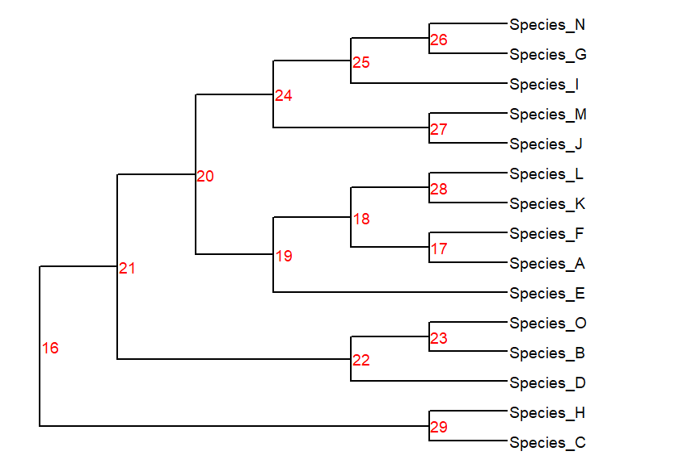

treePlotter¶
This is a walkthrough for the Rboretum Tree Plotter. treePlotter is a wrapper for the ggtree function, and it adds many user-friendly customization options.
Basic Plotting¶
To get started, let’s read in one tree.
myTree <- readRooted(rb_tree1_path,'Species_C;Species_H')
If we run treePlotter(myTree), we can see the default settings.
treePlotter(myTree)
{kind=link}
D’oh! Don’t you hate it when that happens? treePlotter allows you to adjust the xmin and xmax of plots to help with cut-off labels.
treePlotter(myTree,
xmin=-1,xmax=8) # Set x-axis cutoffs
{kind=link}
That’s better! If you want to adjust the thickness of your branches, you can use the branch_weight argument
treePlotter(myTree,
xmin=-1,xmax=8, # Set x-axis cutoffs
branch_weight=3) # Set branch weight
{kind=link}
There are a number of options to tweak the tip labels, including:
taxa_font_size: Set the font size for the tip labels
taxa_fontface: Options include ‘plain’ [default], ‘bold’,’italic’, and ‘bold.italic’
taxa_offset: Set tip label away from tree
treePlotter(myTree,
xmin=-1,xmax=8, # Set x-axis cutoffs
branch_weight=3, # Set branch weight
taxa_font_size=6,taxa_fontface = 'bold',taxa_offset = 0.2) # Adjust tip labels
{kind=link}
Trees can be plotted with or without branch lengths via the branch_length argument. As default, trees are printed as cladograms (branch_length = FALSE)
treePlotter(myTree,xmax = 0.09,
branch_length=TRUE) # Plot tree with branch lengths
{kind=link}
Node labels can also be customized. Basic options include:

node_label: What label to use.
“bs”: Bootstrap [default]
“none”: No label
“node”: Print the Node ID (output from getMRCA)
node_label_font_size
node_label_fontface
node_label_color
node_label_box: Print nodel label in a box [Default = TRUE]
node_label_nudge
- treePlotter(myTree,xmax=8,
node_label = ‘node’,node_label_nudge = 0.1,node_label_box = FALSE,node_label_color = ‘red’) # Adjust node labels
{kind=link}
You can highlight specific tip labels or branchs with colors. There are a few ways to specify groups, including a single vector of tips, or a list of different subsets.
myFavoriteSpecies <- c('Species_N','Species_G','Species_I')
myWorstSpecies <- c('Species_A','Species_B')
species_list <- list("Good" = myFavoriteSpecies, "Bad" = myWorstSpecies)
treePlotter(myTree,xmin=-1,xmax=8,branch_weight=3,taxa_font_size=6,taxa_fontface = 'bold',taxa_offset = 0.2,
to_color = myFavoriteSpecies,colors = 'red',color_branches = TRUE) # Color a vector of species one color
treePlotter(myTree,xmin=-1,xmax=8,branch_weight=3,taxa_font_size=6,taxa_fontface = 'bold',taxa_offset = 0.2,
to_color = myWorstSpecies,colors = 'blue') # Color a vector of species one color
treePlotter(myTree,xmin=-1,xmax=8,branch_weight=3,taxa_font_size=6,taxa_fontface = 'bold',taxa_offset = 0.2,
to_color = species_list) # Color a list of species using one color per list element
treePlotter(myTree,xmin=-1,xmax=8,branch_weight=3,taxa_font_size=6,taxa_fontface = 'bold',taxa_offset = 0.2,
to_color = species_list,colors = c('green3','pink3'),highlight_legend = TRUE) # Color a list of species using one color per list element, and add a legend
{kind=link}
{kind=link}
{kind=link}
{kind=link}
Reverse the X-axis using reverse_x = TRUE
plot1 <- treePlotter(myTree,xmin=-1,xmax=8,branch_weight=3,taxa_font_size=6,taxa_fontface = 'bold',taxa_offset = 0.2,to_color = myFavoriteSpecies,colors="red")
plot2 <- treePlotter(myTree,xmin=-1,xmax=8,branch_weight=3,taxa_font_size=6,taxa_fontface = 'bold',taxa_offset = 0.2,to_color = myWorstSpecies,colors="blue",
reverse_x=TRUE) # Reverse x-axis
tandemPlotter(plot1,plot2)
{kind=link}
MultiPhylo Plotting¶
treePlotter can take mutliPhylo arguments, and can handle them in one of two major ways.
By default, trees from the multiPhylo are first pruned down to a common set of taxa prior to plotting (if necessary)
If basic_plot is TRUE, trees are plotted without pre-pruning.
Under basic_plot, options like visualizing clade or alignment support are disabled.
# Read in multiPhylo of trees
myTrees <- readRooted(rb_unroot_dir,'Species_C;Species_H')
# Create a tree without Species A or B
myTrimmedTree <- treeTrimmer(myTree,myWorstSpecies,remove = TRUE)
# Add trimmed tree to mutliPhylo and rename trees
myNewTrees <- c(myTrees,myTrimmedTree) %>% treeNamer()
treePlotter(myTrees,xmin=-1,xmax=8,node_label_font_size = 3,taxa_offset = 0.2,taxa_fontface = "bold",taxa_font_size = 3,to_color=species_list)
treePlotter(myTrees,xmin=-1,xmax=8,node_label_font_size = 3,taxa_offset = 0.2,taxa_fontface = "bold",taxa_font_size = 3,to_color=species_list,
basic_plot = TRUE) # Plot in basic mode
treePlotter(myNewTrees,xmin=-1,xmax=8,node_label_font_size = 3,taxa_offset = 0.2,taxa_fontface = "bold",taxa_font_size = 3,to_color=species_list)
treePlotter(myNewTrees,xmin=-1,xmax=8,node_label_font_size = 3,taxa_offset = 0.2,taxa_fontface = "bold",taxa_font_size = 3,to_color=species_list,
basic_plot = TRUE) # Plot in basic mode
{kind=link}
{kind=link}
{kind=link}
{kind=link}
If a multiPhylo contains multiple topologies, you can easily visualize node support with treePlotter using the clade_support option.
tree_clades <- getTreeClades(myTrees,return_counts = TRUE)
tree_clades
# A tibble: 22 x 3
Clade Count Trees
<chr> <int> <chr>
1 Species_A;Species_B;Species_D;Species_E;Species_F;Species_G;Species_I;Species_J;Species_K;Species_L;Species_M;Species_N;Species_O 5 Gene_1.nwk;Gene_2.nwk;Gene_3.nwk;Gene_4.nwk;Gene_5.nwk
2 Species_A;Species_F 5 Gene_1.nwk;Gene_2.nwk;Gene_3.nwk;Gene_4.nwk;Gene_5.nwk
3 Species_C;Species_H 5 Gene_1.nwk;Gene_2.nwk;Gene_3.nwk;Gene_4.nwk;Gene_5.nwk
4 Species_G;Species_N 5 Gene_1.nwk;Gene_2.nwk;Gene_3.nwk;Gene_4.nwk;Gene_5.nwk
5 Species_J;Species_M 5 Gene_1.nwk;Gene_2.nwk;Gene_3.nwk;Gene_4.nwk;Gene_5.nwk
6 Species_K;Species_L 5 Gene_1.nwk;Gene_2.nwk;Gene_3.nwk;Gene_4.nwk;Gene_5.nwk
7 Species_A;Species_F;Species_K;Species_L 4 Gene_1.nwk;Gene_2.nwk;Gene_3.nwk;Gene_5.nwk
8 Species_B;Species_D;Species_O 4 Gene_1.nwk;Gene_2.nwk;Gene_3.nwk;Gene_5.nwk
9 Species_B;Species_O 4 Gene_1.nwk;Gene_2.nwk;Gene_3.nwk;Gene_4.nwk
10 Species_G;Species_I;Species_J;Species_M;Species_N 4 Gene_1.nwk;Gene_2.nwk;Gene_3.nwk;Gene_4.nwk
# ... with 12 more rows
treePlotter(myTrees,xmin=-1,xmax=8,taxa_offset = 0.2,taxa_fontface = "bold",to_color=species_list,
clade_support = tree_clades, # Add clade support data
node_label = 'none',geom_alpha = 1,geom_size = 10, # Adjust node geoms
legend_shape_size = 10,legend_font_size = 15) # Adjust legend
{kind=link}
Plotting Support From Alignments¶
If you have multiple sequence alignment data from species in your phylo or multiPhylo object, treePlotter allows you to plot node support onto your phylogenies in a number of ways.
# Get signal from an alignment file, as it relates to species from myTree
mySignal <- getAlignmentSignal(rb_align1_path,species_info = myTree,alignment_name = "Gene A")
# Break down support from mySignal as it relates to splits from myTree
mySupport <- getAlignmentSupport(mySignal,myTree,include_root = TRUE,dataset_name = "Gene A")
# Plot tree with node labels corresponding to the number of sites supporting each split
treePlotter(myTree,xmin=-1,xmax=8,branch_weight=3,taxa_font_size=6,taxa_fontface = 'bold',taxa_offset = 0.2,
tree_support = mySupport,node_label='support',plot_root_support = TRUE) # Add node support data as node label, including root node
{kind=link}
# Plot tree with node geoms, with sizes scaled to the number of sites supporting each split (rescaled from 5 - 30)
treePlotter(myTree,xmin=-1,xmax=8,branch_weight=3,taxa_font_size=6,taxa_fontface = 'bold',taxa_offset = 0.2,
tree_support = mySupport,node_label='support',node_label_nudge = 0.1,plot_root_support = TRUE,
geom_size = c(5,30),geom_alpha = 1) # Add geoms to nodes, sized between 5 - 30 in proportion with relative support counts
{kind=link}
# Plot support from 2+ multiple sequence alignments onto the phylogeny
# Get signal from an alignment files, as it relates to species from myTrees
mySignals <- getAlignmentSignal(rb_alignment_dir,species_info = myTrees,suffix = ".phy",alignment_name = c('Gene_A','Gene_B','Gene_C','Gene_D','Gene_E'))
# Break down support from mySignals as it relates to splits from myTrees
mySupports <- getAlignmentSupport(mySignals,myTrees,include_root = TRUE)
# Plot support values as geoms scaled to the total support summed over all alignments
treePlotter(myTrees,xmin=-1,xmax=8,branch_weight=3,taxa_font_size=4,taxa_fontface = 'bold',taxa_offset = 0.1,
tree_support = mySupports,node_label='support',node_label_nudge = 0.25,node_label_font_size = 3,plot_root_support = TRUE,
geom_size = c(5,30),geom_alpha = 1) # Add support geoms that are sized to overall relative support
{kind=link}
# Plot support values as pies scaled to the total support summed over all alignments, and color coded by alignment
# Note when using pies that the position of the legend needs to be set manually
treePlotter(myTrees,xmin=-1,xmax=8,branch_weight=3,taxa_font_size=4,taxa_fontface = 'bold',taxa_offset = 0.1,
tree_support = mySupports,node_label='support',node_label_nudge = 0.25,node_label_font_size = 3,plot_root_support = TRUE,
geom_size = c(1,5),scale_range=c(50,250), # Rescale support to geoms sized 1 - 5 rescaling data between 50 - 250 sites (lower than min or higher than max set to min/max respectively)
use_pies = TRUE,pie_colors = c('red','blue','green','orange','purple'),geom_alpha = 1, # Add pies, set colors
pie_legend_position = c(1,1,14,14)) # set legend position
{kind=link}